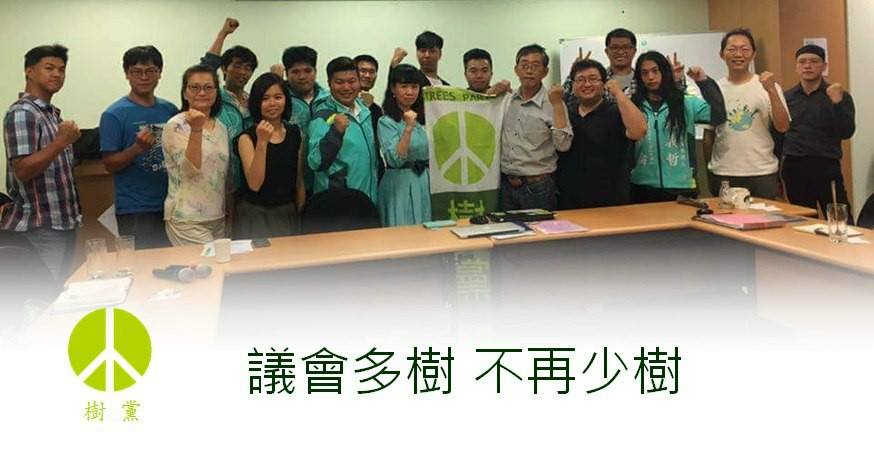

4/22地球日，樹黨在竹北召開2018年度黨員大會，新任中執評委幾乎全數投入年底的地方選舉，新任共同黨主席潘翰疆、林逸萍，分別投入雙北選區。黨員大會通過第一波提名15人，公布其中12人，包括長期耕耘的雙北、新竹，和離島的澎湖。未來台北市6個市議員選區將全部提滿，北部地區將提名十席為目標。
樹黨現任市民代表許育綸，過去四年任內積極進行的文化資產、樹木保護、動物保護、環境保護、等議題，並不以選區為限，今年將挑戰縣議員，擴大監督地方政府，並串聯新竹縣市的第三勢力，共同推動社會改革。
今年澎湖投入選戰的參選人團隊平均年齡 25歲，學歷均為大專以上。市民代表候選人張峻偉更是主動辭去原本在日本的工作，毅然投入選戰。年輕人從政，秉持者環境政治的初衷，要將澎湖打造成為零廢棄島嶼，給鄉親更好的選擇，讓人民可以安心生活。
¶中年返鄉、青年下鄉
樹黨將推出全國最年輕的縣市首長候選人，做為 2018 選舉的最高公職之一。該位夥伴已在地方深耕數年，在地方的參與獲不少鄉親肯定。中南部也有數名的基層候選人，將視適當的時機公布。
樹黨於台北市所提名的劉青英、林逸萍、吳曉東，原於市場行銷研究、英文教學、寵物用品店等社會主流工作多年，有感於環境破壞、流浪動物處境、生命教育的危機迫切，因緣際會投入環境保育、動物保護、教育改革等，未來並將串聯選區基層動保里長連線，讓TNVR、動保警察等動保議題進入首都選戰政見主軸得以突顯。
樹黨黨主席潘翰疆對此波提名表示：「樹黨於 2014 年 8 月成立，9 月參選，第一次選舉，3 個月就立刻拿下3個席次。2018 年，樹黨已經成立四年，這段時間參與樹保、動保、環保運動，所播下的環境政治種子不止萌芽，透過此次選舉，環境政治的森林將邁入盛世。」

¶2018~2020年的樹黨中執評委名單:
中執委：潘翰疆(共同黨主席)、林逸萍(共同黨主席)、蘇柏豪、吳曉東、許育綸、王南昕、劉青英
中評委：陳家宏(主席)、林婉瑜、冼義哲
¶樹黨公佈2018第一波提名地方民代候選人
| 姓名 | 選區 | 學歷 | 經歷 |
|---|---|---|---|
| 吳曉東 | 台北市議員第2選區：內湖、南港 | 文化大學政治學系學士 | 樹黨中執委、麗山國小家長會副會長 |
| 劉青英 | 台北市議員第3選區：松山、信義 | 美國威斯康辛大學麥迪森總校區大眾傳播碩士、國立台灣大學人類學學士 | 樹黨中執委、荒野保護協會理事、公園生態化推動及螢火蟲守護志工、中英口譯、外商行銷研究顧問公司副總監 |
| 林逸萍 | 台北市議員第6選區：大安、文山 | 國立中興大學外文研究所、中興大學外文系 | 樹黨共同黨主席、大學英文講師、英文教科書作者、同步口譯、專欄作家、華語教師、採訪記者、樹黨北北基枝黨部發言人 |
| 吳柏瑋 | 新北市議員第8選區 | 新北根青年陣線發起人、新北市動保員勞動權益自救會、新北市民間樹保大會發起人、地方工作者 | |
| 潘翰疆 | 新北市(選區及層級未定) | 國立中山大學企管系/輔系外文系 | 樹黨共同黨主席、江翠抱樹人、催生十多場護樹公民行動台灣樹人會秘書長、貓狗人協會理事、環保聯盟副秘書長 |
| 許育綸 | 新竹縣議員第1選區：竹北 | 現任竹北市市民代表、樹黨中執委 | |
| 高民晟 | 竹北市民代表第1選區 | 國立交通大學資訊工程研究所 | 童話烘培坊負責人、國科會中央處理器研發工程師 |
| 冼義哲 | 澎湖縣議員第1選區:馬公市 | 澎湖青年陣線召集人、天下雜誌專欄作家、2016澎湖縣立法委員參選人、青年佔領政治共同發起人 | |
| 謝佑康 | 馬公市民代表第1選區 | 澎湖青年陣線資訊部主任、媽宮三甲文化協會發起人 | |
| 王南昕 | 馬公市民代表第2選區 | 樹黨中執委、澎湖青年陣線執行長、澎湖縣反賭場聯盟辦公室主任、澎湖縣海洋生態導覽員 | |
| 招有倫 | 馬公市民代表第3選區 | 澎湖青年陣線副執行長、國立屏東科技大學學生會長、屏東學生勞工陣線召集人 | |
| 張峻偉 | 馬公市民代表第4選區 | 澎湖青年陣線副策略長、前日本大榮環境工程株式會社 |